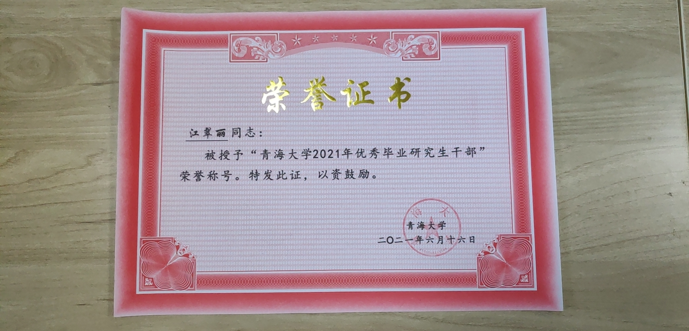
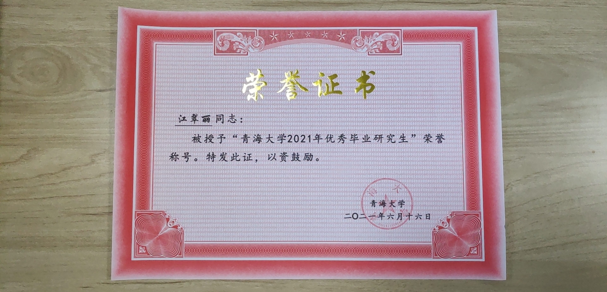
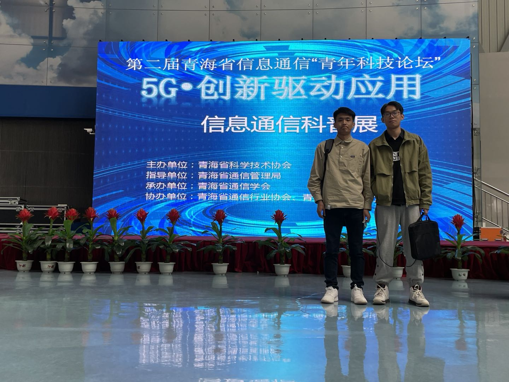
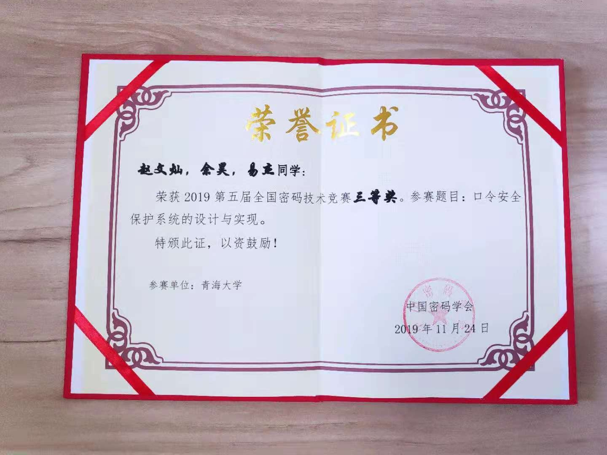
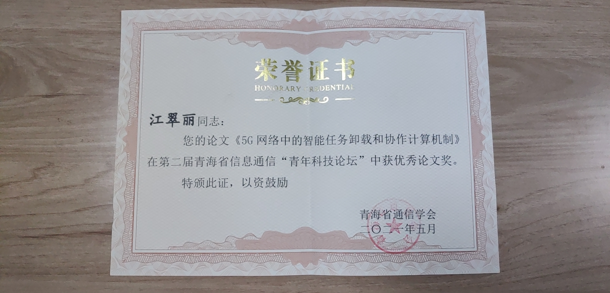
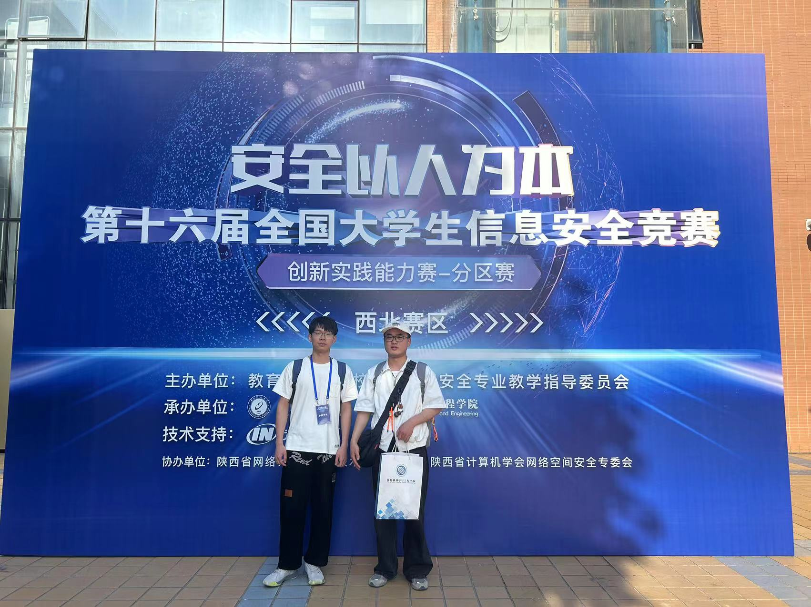

教授，硕导/博导，北京邮电大学博士，中国计算机学会杰出会员，中国通信学会高级会员
Department of Computer Technology and Applications, Qinghai University, Xining, China.
Email:caotf@qhu.edu.cn/tengfeihello@163.com
致报考我的研究生曹腾飞，2020年获北京邮电大学工学博士（导师：许长桥教授），现为青海大学计算机学院教授，博士生导师，青海省媒体融合技术与传播重点实验室主任、青海省绿色算电融合发展科技创新智库负责人，IEEE会员、CCF杰出会员、中国通信学会高级会员。主要从事联邦机器学习、深度强化学习、隐私安全计算、网络大模型及智慧生态应用等领域的研究，目前以第一作者/通信作者在IEEE TNSM、TNSE、TCSS、TSUSC、ACM TOMM、中国通信、IEEE ICC、GLOBECOM等国内外知名期刊、会议上发表论文30余篇(dblp: Tengfei Cao)，入选2020年青海省“昆仑英才·高端创新创业人才”项目拔尖人才，2023年青海省“昆仑英才·科技领军人才”自然科学与工程技术学科带头人，研究成果获青海省教学成果一等奖1项(5/10)，中央网信办网络安全科学技术三等奖(2/7)，青海省自然科学三等奖1项(4/5)。先后承担《网络技术及其应用》(青海大学虚拟仿真教学平台)、《多媒体与数据传输》、《网络攻防实验技术》等多门本科生/研究生课程，主持/参与国家及省部级项目10项，正在培养博士研究生4名、硕士研究生9名、本科生多名。目前还兼任《网络与信息安全学报》青年编委，《计算机科学》执行编委，中国通信学会第十届普及与教育工作委员会委员。
2018级江翠丽
2020级张子震
2021级易杰、汪健
2022级王世颍（博士）、方彦博、尹润天、张一鸣、张洪润
2023级师重阳、孙天乐、张念庆
2023级刘薇（博士在读）
2024级王艳雨（博士在读）、刘瑶、胡德洋、毛浩宇
2025级邵盈鑫（博士在读）、周艺宣（博士在读）、张艺超、邓梓江、林晗城






有梦想 有担当 有责任 有奋斗 欢迎加入我们！！！